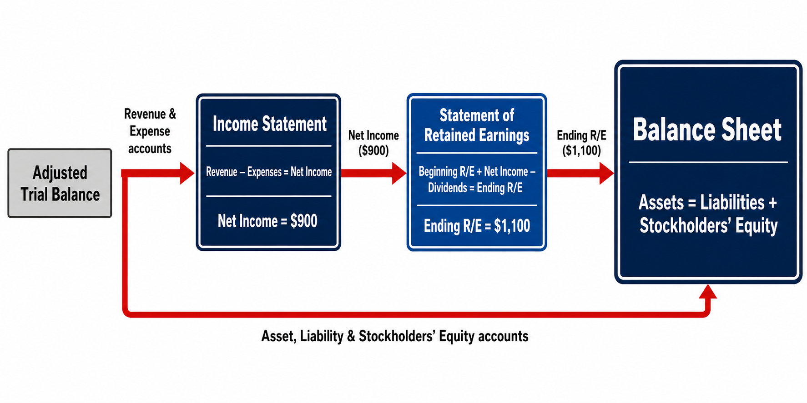
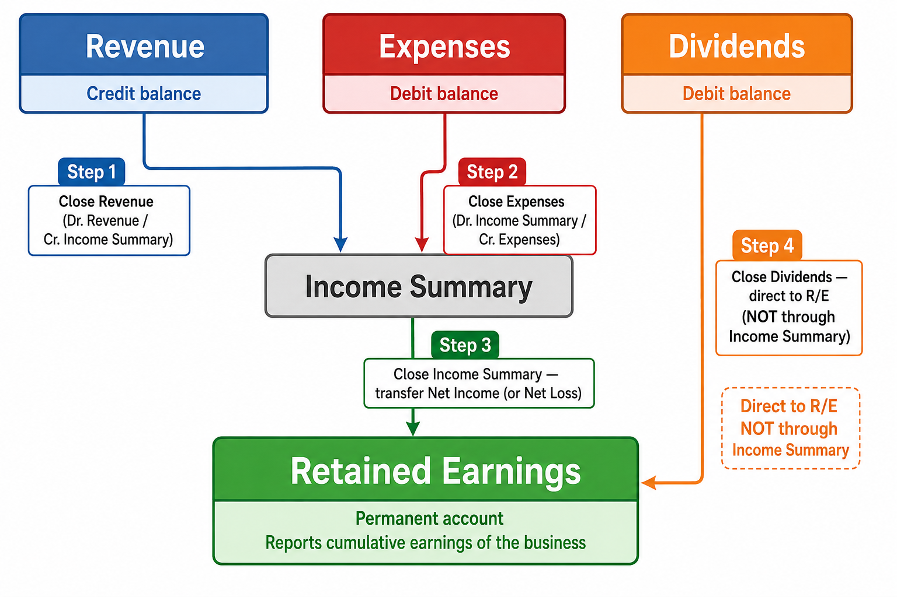
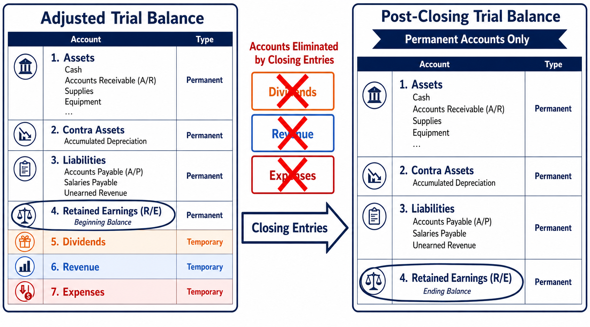
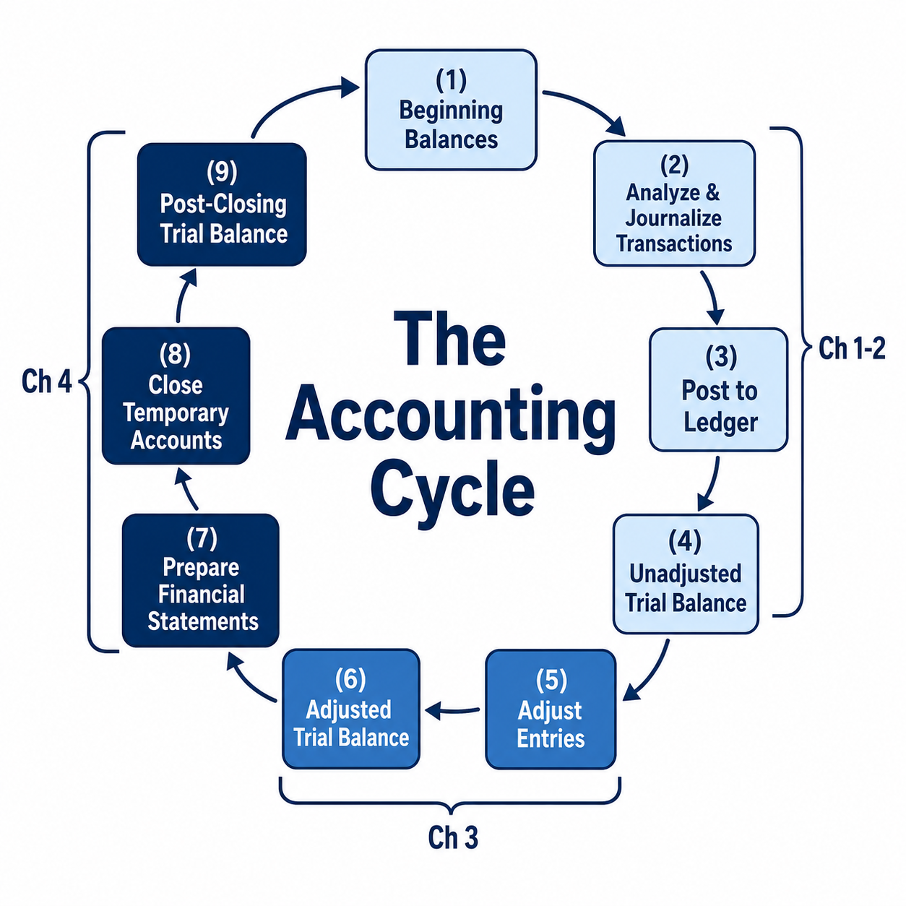

Financial Statements, Closing Entries, and the Post-Closing Trial Balance
Each link opens the lecture video at that topic. Timestamps are approximate — a topic may begin a few seconds before or after the mark, so step back a little if you land mid-sentence.
In Chapter 3, the adjusting process concluded with the preparation of an adjusted trial balance. This adjusted trial balance contains the updated balances of every account—assets, liabilities, stockholders’ equity, revenues, and expenses—all of which have been corrected through adjusting entries. The adjusted trial balance serves as the direct source from which the three primary financial statements are prepared.
The three financial statements are prepared in a specific sequence because they are interrelated. Information flows from one statement to the next in a precise order:
Each statement must be completed before the next can be prepared.
The income statement reports revenues and expenses and calculates net income (or net loss) for the period. To prepare it, extract all revenue and expense accounts from the adjusted trial balance. Revenue accounts carry credit balances; expense accounts carry debit balances. The difference between total revenues and total expenses yields net income (if revenues exceed expenses) or net loss (if expenses exceed revenues).
The statement of retained earnings shows how retained earnings changed during the period. It begins with the beginning balance of Retained Earnings (carried over from the previous period), adds net income (from the income statement), and subtracts dividends declared during the period. The result is the ending balance of Retained Earnings.
If the company incurred a net loss, the formula becomes: Beginning R/E − Net Loss − Dividends.
Notice that the Retained Earnings figure shown on the adjusted trial balance is the beginning balance. It has not yet been updated for the current period’s net income or dividends. That update occurs only after the closing process (covered later in this chapter). This is precisely why we need the Statement of Retained Earnings—to bridge the gap between the beginning balance on the adjusted trial balance and the ending balance that appears on the balance sheet.
The balance sheet reports assets, liabilities, and stockholders’ equity as of the last day of the period. The ending Retained Earnings figure from the statement of retained earnings flows directly into the equity section of the balance sheet—this is why the income statement and statement of retained earnings must be prepared first.
Note that in this example, Smart Touch Learning began operations on December 1, so the beginning Retained Earnings was zero. In subsequent periods, the ending balance from one period becomes the beginning balance of the next.

A classified balance sheet organizes assets and liabilities into specific categories. Assets are listed in order of liquidity—the speed and ease with which they can be converted to cash. Liabilities are classified by maturity—whether they must be settled within the near term or over the long term.
Current assets are assets that will be converted to cash, sold, or used up during the next 12 months or within the business’s operating cycle, whichever is longer. The operating cycle is the time span during which a company uses cash to acquire goods and services, sells those goods and services to customers, and collects cash from those customers. It is sometimes called the “cash-to-cash” cycle.
Consider the Boeing Company. Boeing manufactures airplanes, which can take well over a year to build. These airplanes are Boeing’s inventory—and inventory is a current asset. If the threshold were strictly 12 months, Boeing’s work-in-progress aircraft could not be classified as current assets. However, because the operating cycle definition extends beyond 12 months when the business cycle requires it, these inventories are correctly classified as current assets.
Common examples of current assets include Cash, Accounts Receivable, Inventory, Prepaid Expenses, and Supplies. They are listed on the balance sheet from most liquid (Cash) to least liquid.
Long-term assets encompass all assets that are not classified as current. They fall into three main subcategories:
Long-lived, tangible assets used in operations. Examples: land, buildings, equipment, furniture. Must meet all three criteria: long-lived, tangible, and used in operations.
Investments in stocks, bonds, or other assets that the company intends to hold for longer than one year. Also includes tangible assets held for investment purposes (not used in operations).
Suppose a company owns a parcel of land. If the company uses the land for its daily business operations—say, as a parking lot for its headquarters—it is classified as PP&E. However, if the company purchased the land purely for speculation (buy low, sell high later), that same land is classified as a long-term investment. The intent behind holding the asset determines its classification, not its physical nature.
Intangible assets are assets with no physical form that hold value because of the special rights they grant. Examples include patents, copyrights, trademarks, and goodwill.
Current liabilities must be paid with cash, or settled with goods and services, within one year or within the entity’s operating cycle, whichever is longer. Common examples include Accounts Payable, Salaries Payable, Interest Payable, and Unearned Revenue. Note that Unearned Revenue is a current liability that is settled not by paying cash but by providing services.
Long-term liabilities are obligations that do not need to be paid within one year or the operating cycle. Examples include long-term Notes Payable, Bonds Payable, and Mortgage Payable.
Stockholders’ equity represents the stockholders’ residual claims to the assets of the business after all liabilities have been paid. There is no current versus long-term classification within equity. It consists of two main components:
A worksheet is an internal document (not a financial statement itself) that accountants use to organize the preparation of financial statements. It is a continuation of the worksheet introduced in Chapter 3 for the adjusting process. Beyond the first four sections already discussed (Account Names, Unadjusted Trial Balance, Adjustments, and Adjusted Trial Balance), the worksheet adds three more sections:
When you extract revenues and expenses into the Income Statement columns, the debits and credits in those columns will not be equal—this is expected, because you are only pulling part of the trial balance. The difference between the income statement debits and credits represents the net income (or net loss). This same difference also appears as the balancing amount in the balance sheet columns.
In the Smart Touch Learning example, the income statement debit total is $8,950 (total expenses) and the credit total is $17,500 (total revenue). The difference of $8,550 is the net income. This figure is placed in the income statement debit column and the balance sheet credit column so that both sections balance to $17,500.
The worksheet is an optional tool. It is not a required part of the accounting cycle and is never distributed to external users. Its sole purpose is to help the accountant organize information and reduce errors when preparing the formal financial statements.
Before discussing closing entries, it is essential to understand the distinction between two classifications of accounts: temporary accounts and permanent accounts.
Balances are reset to zero at the end of each period. They measure activity for a single reporting period only.
Balances carry over from one period to the next. The ending balance becomes the beginning balance of the following period. They are never closed.
The income statement covers a specific reporting period—a month, a quarter, or a year. To accurately depict the activity for that period alone, revenue and expense accounts must begin each new period with a zero balance. If balances carried over from a previous period, they would reflect an accumulation of activities across multiple periods rather than the activity of just the current period. The process of resetting these balances to zero is called closing.
The dividends account is also temporary because dividends represent distributions made during a specific period. Like revenues and expenses, dividends must be tracked on a period-by-period basis and then closed.
Retained Earnings is a permanent account—it is never closed. The closing process updates Retained Earnings by transferring the period’s net income and dividends into it, but the account itself is never reset to zero. It accumulates all operating results and dividend distributions since the company’s inception.
Closing entries are journal entries made at the end of each accounting period to transfer the balances of temporary accounts to Retained Earnings and to reset those temporary accounts to zero. The closing process accomplishes two objectives: (1) it ensures that temporary accounts begin the next period with zero balances, and (2) it updates Retained Earnings to reflect the period’s net income and dividends.
The closing process uses a temporary “holding” account called the Income Summary account. This account exists solely during the closing process; it has no normal balance and does not appear on any financial statement.
The closing process consists of four steps:
Debit each revenue account for its balance; credit Income Summary for the total.
Credit each expense account for its balance; debit Income Summary for the total.
Transfer the net income (or net loss) to Retained Earnings.
Transfer the dividends balance directly to Retained Earnings (bypasses Income Summary).

Revenue accounts have a normal credit balance. To bring a revenue account to zero, an equal debit must be applied. The offsetting credit is made to Income Summary.
Smart Touch Learning has a $17,500 credit balance in Service Revenue at the end of December. To close this account:
After posting, Service Revenue has a zero balance. The $17,500 has been transferred to the Income Summary account.
If a company has multiple revenue accounts, each one is debited individually, and Income Summary is credited for the combined total.
Expense accounts have a normal debit balance. To bring each expense account to zero, an equal credit must be applied. The offsetting debit is made to Income Summary. In practice, rather than closing each expense account with a separate journal entry, a single compound journal entry credits all expense accounts simultaneously and debits Income Summary for the total.
Smart Touch Learning has eight expense accounts with the following adjusted balances:
After posting, every individual expense account has a zero balance. The total expenses of $8,950 have been transferred as a debit to Income Summary.
After closing revenues (Step 1) and expenses (Step 2), the Income Summary account contains the following:
The credit balance of $8,550 in Income Summary represents the net income for the period—exactly the same figure reported on the income statement ($17,500 revenue − $8,950 expenses = $8,550). This is not a coincidence; it is by design. The Income Summary account aggregates all revenues and expenses in one place before transferring the net result to Retained Earnings.
If total expenses exceeded total revenues, the Income Summary account would have a debit balance after Steps 1 and 2, representing a net loss. The closing entry in Step 3 would then be reversed: credit Income Summary and debit Retained Earnings. A net loss decreases Retained Earnings.
The Income Summary account is itself a temporary account, so it must also be closed. Its balance (net income or net loss) is transferred to Retained Earnings. This step reflects the fundamental reality that a company’s operating profits accumulate in Retained Earnings over time.
The Income Summary account has a credit balance of $8,550 (net income). To close it:
After posting, Income Summary has a zero balance. Retained Earnings has been credited for $8,550, increasing its balance by the period’s net income.
If a company had a net loss of $2,000 (Income Summary has a debit balance of $2,000), the closing entry would be:
A net loss debits (decreases) Retained Earnings.
The final closing step addresses the Dividends account. Dividends are not expenses—they are distributions of accumulated profits to stockholders. Therefore, dividends are not routed through Income Summary. Instead, the Dividends account is closed directly to Retained Earnings.
Smart Touch Learning declared $5,000 in dividends during December. The Dividends account has a debit balance of $5,000. To close it:
After posting, the Dividends account has a zero balance. Retained Earnings has been debited for $5,000, reducing its balance to reflect the distributions made to stockholders.
Dividends bypass Income Summary because dividends are not part of the income statement. They do not affect the calculation of net income. Dividends are distributions of already-earned profits, not operating activities. Including them in Income Summary would distort the net income figure.
After all four closing entries have been posted, the Retained Earnings T-account summarizes the entire closing process:
The ending balance of Retained Earnings is $0 + $8,550 − $5,000 = $3,550. Notice that this is exactly the same figure that appears on the statement of retained earnings and on the balance sheet. The closing entries have formally updated the Retained Earnings account to reflect the period’s operating results and dividend distributions.
The Retained Earnings T-account after closing mathematically mirrors the statement of retained earnings formula:
\(\text{Beginning R/E} + \text{Net Income} - \text{Dividends} = \text{Ending R/E}\)
\(\$0 + \$8{,}550 - \$5{,}000 = \$3{,}550\)
All these activities—adding net income and subtracting dividends—are summarized within a single account. The closing process is the mechanical means by which the formula is executed in the accounting system.
To reinforce the four-step closing process with simpler numbers, consider the following scenario:
A company has the following adjusted balances at year-end: Revenue = $1,000 (Cr.); Total Expenses = $300 (Dr.); Dividends = $30 (Dr.); Beginning Retained Earnings = $50 (Cr.).
Step 1: Close Revenue
Step 2: Close Expenses
Income Summary now has a credit balance of $700 ($1,000 − $300 = net income).
Step 3: Close Income Summary
Step 4: Close Dividends
Retained Earnings after closing:
Ending Retained Earnings = $50 + $700 − $30 = $720.
After all closing entries have been journalized and posted, the final step of the accounting cycle is to prepare a post-closing trial balance. This is a list of all accounts and their balances at the end of the period, after the closing entries have been processed.
The post-closing trial balance has two defining characteristics:

On the adjusted trial balance, the Retained Earnings figure represents the beginning balance—it has not yet been updated for net income or dividends. On the post-closing trial balance, Retained Earnings shows the ending balance, which now incorporates the period’s net income and subtracts the period’s dividends.
This distinction is critical. When preparing financial statements from the adjusted trial balance, you cannot simply copy the Retained Earnings figure onto the balance sheet—you must first prepare the statement of retained earnings to calculate the ending balance.
| Post-Closing Trial Balance — Smart Touch Learning — December 31, 2026 | ||
|---|---|---|
| Account | Debit | Credit |
| Cash | $14,900 | |
| Accounts Receivable | 2,800 | |
| Prepaid Rent | 2,000 | |
| Prepaid Insurance | 1,000 | |
| Supplies | 600 | |
| Furniture | 18,000 | |
| Accumulated Depreciation—Furniture | $300 | |
| Building | 60,000 | |
| Accumulated Depreciation—Building | 250 | |
| Accounts Payable | 18,200 | |
| Salaries Payable | 1,200 | |
| Interest Payable | 100 | |
| Unearned Revenue | 600 | |
| Notes Payable | 60,000 | |
| Common Stock | 15,100 | |
| Retained Earnings | 3,550 | |
| Total | $99,300 | $99,300 |
Notice the absence of any revenue, expense, dividends, or Income Summary accounts. Every temporary account has been successfully closed to zero. The Retained Earnings balance of $3,550 reflects the ending balance after absorbing the period’s net income ($8,550) and dividends ($5,000).
The accounting cycle is the process by which companies produce their financial statements for a specific period. It begins with the beginning account balances left over from the preceding period and ends with the post-closing trial balance. Chapters 1 through 4 cover the entire cycle.
Steps 1–4 were covered in Chapters 1 and 2. Steps 5–6 were covered in Chapter 3. Steps 7–9 (highlighted above) are the focus of this chapter. Together, these nine steps form the complete foundation of financial accounting.

Chapters 1 through 4 form the foundational basis for the entire course. Every subsequent topic builds on the accounting cycle. Before moving forward, make sure you can confidently perform every step—from analyzing a transaction to preparing a post-closing trial balance. If any step is unclear, revisit it now.
Financial ratios allow analysts, investors, and managers to evaluate a company’s financial health. The current ratio measures a company’s ability to pay its current liabilities using its current assets. It provides a snapshot of short-term liquidity.
A company strongly prefers to have a high current ratio. As a general benchmark, the current ratio should be greater than 1.0. A ratio below 1.0 indicates that current liabilities exceed current assets, which may signal a liquidity concern—the company might struggle to pay its near-term obligations. However, a ratio below 1.0 does not automatically mean the company is at risk of bankruptcy; the company may still generate strong cash flows from operations that enable it to meet its obligations.
Using Smart Touch Learning’s classified balance sheet from Section 2:
\(\text{Current Ratio} = \frac{\$21{,}300}{\$20{,}100} = 1.06\)
Smart Touch Learning’s current ratio of 1.06 means that for every $1 of current liabilities, the company has $1.06 of current assets available to pay them. This is just barely above 1.0, suggesting the company has adequate—but not abundant—short-term liquidity.
Unlike Return on Assets (ROA), which requires calculating average total assets (because net income is earned over a period while assets are measured at a point in time), the current ratio uses two figures that are both from the balance sheet—both measured at the same point in time. Therefore, there is no need to calculate an average. You simply use the figures as of that specific date.
Kohl’s Corporation reported the following:
| Jan. 30, 2026 | Jan. 30, 2025 | |
|---|---|---|
| Total Current Assets | $5,117M | $5,638M |
| Total Current Liabilities | $2,928M | $2,846M |
| Current Ratio | 1.75 | 1.98 |
Kohl’s current ratio declined from 1.98 in 2025 to 1.75 in 2026. This suggests a slight deterioration in Kohl’s ability to pay current debts, though both ratios remain well above 1.0. An increase in current liabilities combined with a decrease in current assets drove the decline.
Reversing entries are special journal entries made on the first day of a new accounting period. They exactly reverse certain adjusting entries made at the end of the previous period. Reversing entries are entirely optional—they do not change the final financial results. Their sole purpose is bookkeeping convenience.
At December 31, a company accrues $1,200 of Salaries Expense:
Without a reversing entry:
When payday arrives in January and the total payroll is $2,400 (covering Dec. 16–Jan. 15), the accountant must carefully split the payment:
With a reversing entry:
On January 1, the accountant reverses the December 31 adjusting entry:
This creates a temporary $1,200 credit balance in Salaries Expense (which looks unusual, but it is intentional). Now, on payday, the accountant simply records the full payment:
After posting the $2,400 debit against the existing $1,200 credit, Salaries Expense shows a net debit of $1,200—exactly the expense that belongs to January. The mathematical result is identical to the approach without reversing entries, but the payment entry is much simpler.
Reversing entries are a tool of convenience, not a requirement. They are most commonly used for accrued expenses and accrued revenues. The key takeaway is that regardless of whether reversing entries are used, the final account balances—and therefore the financial statements—are the same.